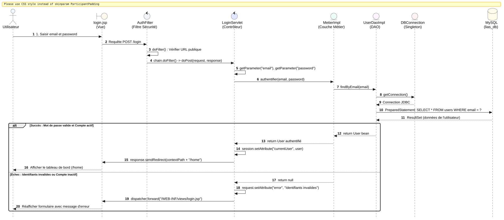
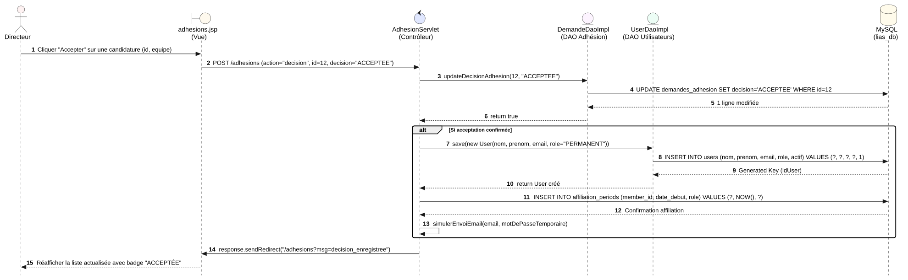
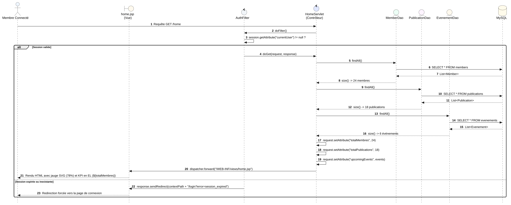
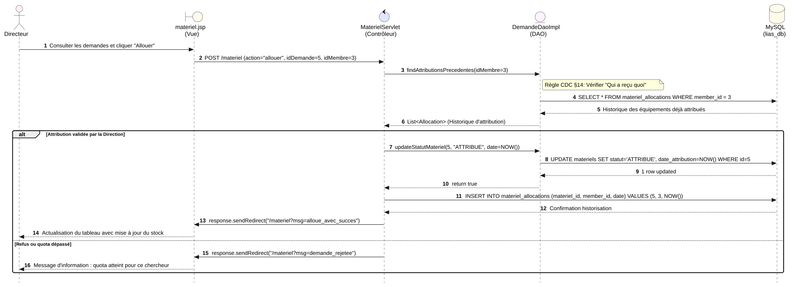
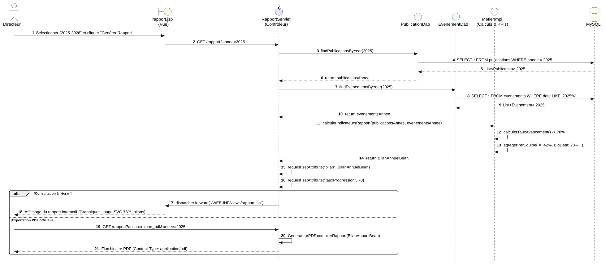
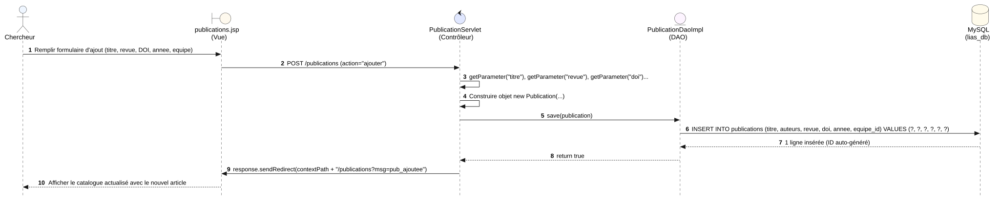

إذا كانت مخططات العلبة السوداء تكتفي بالنظر للنظام من الخارج، فإن مخططات العلبة البيضاء (Diagrammes de Séquence de Conception / Boîte Blanche) تكشف **الهندسة المعمارية الداخلية لتطبيق الـ JEE الكلاسيكي (MVC 2)**. توضح هذه المخططات بدقة كيف تتعاون طبقات النظام: صفحات الـ JSP (Vue) ⟵ فلاتر الأمان (AuthFilter) ⟵ المتحكمات (Servlets) ⟵ طبقة المنطق (Métier) ⟵ طبقة البيانات (DAO & JDBC) ⟵ وصولاً إلى قاعدة البيانات (MySQL).
DBConnection والـ Sessions لإدارة الدخول الآمن.
يوضح هذا المخطط رحلة طلب تسجيل الدخول من نقرة المستخدم في login.jsp، مروراً بـ AuthFilter و LoginServlet، والتحقق عبر طبقة الـ Métier واستعلام PreparedStatement في قاعدة البيانات، وصولاً إلى إنشاء الـ HttpSession والتوجيه إلى /home:

@startuml
autonumber
skinparam style strictuml
skinparam defaultFontName Arial
skinparam sequenceMessageAlign center
skinparam roundcorner 8
skinparam BoxPadding 8
skinparam ParticipantPadding 10
actor "Utilisateur" as User #EFF6FF
boundary "login.jsp\\n(Vue)" as Vue #FEF9EE
control "AuthFilter\\n(Filtre Sécurité)" as Filter #F1F5F9
control "LoginServlet\\n(Contrôleur)" as Servlet #E0E7FF
entity "MetierImpl\\n(Couche Métier)" as Metier #ECFDF5
entity "UserDaoImpl\\n(DAO)" as DAO #FDF4FF
entity "DBConnection\\n(Singleton)" as DB #FEF2F2
database "MySQL\\n(lias_db)" as SQL #FFFBEB
User -> Vue : 1. Saisir email et password
Vue -> Filter : Requête POST /login
Filter -> Filter : doFilter() : Vérifier URL publique
Filter -> Servlet : chain.doFilter() -> doPost(request, response)
Servlet -> Servlet : getParameter("email"), getParameter("password")
Servlet -> Metier : authentifier(email, password)
Metier -> DAO : findByEmail(email)
DAO -> DB : getConnection()
DB --> DAO : Connection JDBC
DAO -> SQL : PreparedStatement: SELECT * FROM users WHERE email = ?
SQL --> DAO : ResultSet (données de l'utilisateur)
alt Succès : Mot de passe valide et Compte actif
DAO --> Metier : return User bean
Metier --> Servlet : return User authentifié
Servlet -> Servlet : session.setAttribute("currentUser", user)
Servlet -> Vue : response.sendRedirect(contextPath + "/home")
Vue --> User : Afficher le tableau de bord (/home)
else Échec : Identifiants invalides ou Compte inactif
Metier --> Servlet : return null
Servlet -> Servlet : request.setAttribute("error", "Identifiants invalides")
Servlet -> Vue : dispatcher.forward("/WEB-INF/views/login.jsp")
Vue --> User : Réafficher formulaire avec message d'erreur
end
@enduml
يوضح كيف يعالج AdhesionServlet قرار المدير بالقبول: تحديث حالة الطلب في demandes_adhesion، إنشاء حساب المستخدم في users، تسجيل أول فترة انتساب في affiliation_periods، ومحاكاة إرسال البريد ببيانات الدخول:

@startuml
autonumber
skinparam style strictuml
skinparam defaultFontName Arial
skinparam sequenceMessageAlign center
skinparam roundcorner 8
actor "Directeur" as Dir #FEF2F2
boundary "adhesions.jsp\\n(Vue)" as Vue #FEF9EE
control "AdhesionServlet\\n(Contrôleur)" as Servlet #E0E7FF
entity "DemandeDaoImpl\\n(DAO Adhésion)" as DemandeDAO #FDF4FF
entity "UserDaoImpl\\n(DAO Utilisateurs)" as UserDAO #ECFDF5
database "MySQL\\n(lias_db)" as SQL #FFFBEB
Dir -> Vue : Cliquer "Accepter" sur une candidature (id, equipe)
Vue -> Servlet : POST /adhesions (action="decision", id=12, decision="ACCEPTEE")
Servlet -> DemandeDAO : updateDecisionAdhesion(12, "ACCEPTEE")
DemandeDAO -> SQL : UPDATE demandes_adhesion SET decision='ACCEPTEE' WHERE id=12
SQL --> DemandeDAO : 1 ligne modifiée
DemandeDAO --> Servlet : return true
alt Si acceptation confirmée
Servlet -> UserDAO : save(new User(nom, prenom, email, role="PERMANENT"))
UserDAO -> SQL : INSERT INTO users (nom, prenom, email, role, actif) VALUES (?, ?, ?, ?, 1)
SQL --> UserDAO : Generated Key (idUser)
UserDAO --> Servlet : return User créé
Servlet -> SQL : INSERT INTO affiliation_periods (member_id, date_debut, role) VALUES (?, NOW(), ?)
SQL --> Servlet : Confirmation affiliation
Servlet -> Servlet : simulerEnvoiEmail(email, motDePasseTemporaire)
end
Servlet -> Vue : response.sendRedirect("/adhesions?msg=decision_enregistree")
Vue --> Dir : Réafficher la liste actualisée avec badge "ACCEPTÉE"
@enduml
يوضح كيف يقوم HomeServlet بفحص الجلسة عبر الفلتر، واستدعاء عدة DAOs في آن واحد لتجميع المؤشرات وتمريرها عبر request.setAttribute() إلى home.jsp لعرضها عبر لغة الـ EL:

@startuml
autonumber
skinparam style strictuml
skinparam defaultFontName Arial
skinparam sequenceMessageAlign center
skinparam roundcorner 8
actor "Membre Connecté" as Membre #EFF6FF
boundary "home.jsp\\n(Vue)" as Vue #FEF9EE
control "AuthFilter" as Filter #F1F5F9
control "HomeServlet\\n(Contrôleur)" as Servlet #E0E7FF
entity "MemberDao" as MemDao #ECFDF5
entity "PublicationDao" as PubDao #FDF4FF
entity "EvenementDao" as EvtDao #FEF9EE
database "MySQL" as SQL #FFFBEB
Membre -> Servlet : Requête GET /home
Servlet -> Filter : doFilter()
Filter -> Filter : session.getAttribute("currentUser") != null ?
alt Session valide
Filter -> Servlet : doGet(request, response)
Servlet -> MemDao : findAll()
MemDao -> SQL : SELECT * FROM members
SQL --> MemDao : List
MemDao --> Servlet : size() -> 24 membres
Servlet -> PubDao : findAll()
PubDao -> SQL : SELECT * FROM publications
SQL --> PubDao : List
PubDao --> Servlet : size() -> 18 publications
Servlet -> EvtDao : findAll()
EvtDao -> SQL : SELECT * FROM evenements
SQL --> EvtDao : List
EvtDao --> Servlet : size() -> 6 événements
Servlet -> Servlet : request.setAttribute("totalMembres", 24)
Servlet -> Servlet : request.setAttribute("totalPublications", 18)
Servlet -> Servlet : request.setAttribute("upcomingEvents", events)
Servlet -> Vue : dispatcher.forward("/WEB-INF/views/home.jsp")
Vue --> Membre : Rendu HTML avec jauge SVG (78%) et KPI en EL (${totalMembres})
else Session expirée ou inexistante
Filter -> Vue : response.sendRedirect(contextPath + "/login?error=session_expired")
Vue --> Membre : Redirection forcée vers la page de connexion
end
@enduml
تطبيق قاعدة دفتر التحملات (§14): يستعلم MaterielServlet عن سجل الاستفادة السابق للعضو (Qui a reçu quoi) قبل تنفيذ المصادقة والتحديث في جدول materiel_allocations:

@startuml autonumber skinparam style strictuml skinparam defaultFontName Arial skinparam sequenceMessageAlign center skinparam roundcorner 8 actor "Directeur" as Dir #FEF2F2 boundary "materiel.jsp\\n(Vue)" as Vue #FEF9EE control "MaterielServlet\\n(Contrôleur)" as Servlet #E0E7FF entity "DemandeDaoImpl\\n(DAO)" as DAO #FDF4FF database "MySQL\\n(lias_db)" as SQL #FFFBEB Dir -> Vue : Consulter les demandes et cliquer "Allouer" Vue -> Servlet : POST /materiel (action="allouer", idDemande=5, idMembre=3) Servlet -> DAO : findAttributionsPrecedentes(idMembre=3) note right of DAO: Règle CDC §14: Vérifier "Qui a reçu quoi" DAO -> SQL : SELECT * FROM materiel_allocations WHERE member_id = 3 SQL --> DAO : Historique des équipements déjà attribués DAO --> Servlet : List(Historique d'attribution) alt Attribution validée par la Direction Servlet -> DAO : updateStatutMateriel(5, "ATTRIBUE", date=NOW()) DAO -> SQL : UPDATE materiels SET statut='ATTRIBUE', date_attribution=NOW() WHERE id=5 SQL --> DAO : 1 row updated DAO --> Servlet : return true Servlet -> SQL : INSERT INTO materiel_allocations (materiel_id, member_id, date) VALUES (5, 3, NOW()) SQL --> Servlet : Confirmation historisation Servlet -> Vue : response.sendRedirect("/materiel?msg=alloue_avec_succes") Vue --> Dir : Actualisation du tableau avec mise à jour du stock else Refus ou quota dépassé Servlet -> Vue : response.sendRedirect("/materiel?msg=demande_rejetee") Vue --> Dir : Message d'information : quota atteint pour ce chercheur end @enduml
يوضح كيف يقوم RapportServlet بتجميع المنشورات والأحداث لسنة معينة، واستدعاء دالة الحسابات في طبقة الـ Métier لحساب مؤشرات الأداء (KPIs) ومعدل التقدم (78%)، ثم إما إرسالها لـ rapport.jsp أو ضخها كملف PDF رسمي:

@startuml autonumber skinparam style strictuml skinparam defaultFontName Arial skinparam sequenceMessageAlign center skinparam roundcorner 8 actor "Directeur" as Dir #FEF2F2 boundary "rapport.jsp\\n(Vue)" as Vue #FEF9EE control "RapportServlet\\n(Contrôleur)" as Servlet #E0E7FF entity "PublicationDao" as PubDao #FDF4FF entity "EvenementDao" as EvtDao #ECFDF5 entity "MetierImpl\\n(Calculs & KPIs)" as Metier #FEF9EE database "MySQL" as SQL #FFFBEB Dir -> Vue : Sélectionner "2025-2026" et cliquer "Générer Rapport" Vue -> Servlet : GET /rapport?annee=2025 Servlet -> PubDao : findPublicationsByYear(2025) PubDao -> SQL : SELECT * FROM publications WHERE annee = 2025 SQL --> PubDao : List2025 PubDao --> Servlet : return publicationsAnnee Servlet -> EvtDao : findEvenementsByYear(2025) EvtDao -> SQL : SELECT * FROM evenements WHERE date LIKE '2025%' SQL --> EvtDao : List 2025 EvtDao --> Servlet : return evenementsAnnee Servlet -> Metier : calculerIndicateursRapport(publicationsAnnee, evenementsAnnee) Metier -> Metier : calculerTauxAvancement() -> 78% Metier -> Metier : agregerParEquipe(IA: 42%, BigData: 28%...) Metier --> Servlet : return BilanAnnuelBean Servlet -> Servlet : request.setAttribute("bilan", BilanAnnuelBean) Servlet -> Servlet : request.setAttribute("tauxProgression", 78) alt Consultation à l'écran Servlet -> Vue : dispatcher.forward("/WEB-INF/views/rapport.jsp") Vue --> Dir : Affichage du rapport interactif (Graphiques, jauge SVG 78%, bilans) else Exportation PDF officielle Dir -> Servlet : GET /rapport?action=export_pdf&annee=2025 Servlet -> Servlet : GenerateurPDF.compilerRapport(BilanAnnuelBean) Servlet --> Dir : Flux binaire PDF (Content-Type: application/pdf) end @enduml
يوضح كيف يعالج PublicationServlet استمارة إضافة مقال جديد: التحقق من المعاملات (Titre, Revue, DOI)، بناء كائن الـ JavaBean، وحفظه في جدول publications عبر PreparedStatement:

@startuml
autonumber
skinparam style strictuml
skinparam defaultFontName Arial
skinparam sequenceMessageAlign center
skinparam roundcorner 8
actor "Chercheur" as Chercheur #EFF6FF
boundary "publications.jsp\\n(Vue)" as Vue #FEF9EE
control "PublicationServlet\\n(Contrôleur)" as Servlet #E0E7FF
entity "PublicationDaoImpl\\n(DAO)" as DAO #FDF4FF
database "MySQL\\n(lias_db)" as SQL #FFFBEB
Chercheur -> Vue : Remplir formulaire d'ajout (titre, revue, DOI, annee, equipe)
Vue -> Servlet : POST /publications (action="ajouter")
Servlet -> Servlet : getParameter("titre"), getParameter("revue"), getParameter("doi")...
Servlet -> Servlet : Construire objet new Publication(...)
Servlet -> DAO : save(publication)
DAO -> SQL : INSERT INTO publications (titre, auteurs, revue, doi, annee, equipe_id) VALUES (?, ?, ?, ?, ?, ?)
SQL --> DAO : 1 ligne insérée (ID auto-généré)
DAO --> Servlet : return true
Servlet -> Vue : response.sendRedirect(contextPath + "/publications?msg=pub_ajoutee")
Vue --> Chercheur : Afficher le catalogue actualisé avec le nouvel article
@enduml